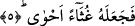

5. Sonra da onu kapkara bir sel artığına çevirmiştir.
Âyette yer alan “ğusâ” ağaç ve bitki kırıntıları demektir. Cevheri’nin ifâdesine göre;
el-ğusâ selin önüne katıp sürüklediği ve nehirlerin kenarlarına bıraktığı çer çöp, kırıntı
ve atıkları demektir. İnsanların değersizleri de bu kavrama dâhildir.
“Ahvâ” kelimesini ele alalım. Bunun anlamı; siyah demektir çünkü ot kuruduğu zaman
siyahlaşır. İster güneşin harâretinin etkisiyle kuruyup siyahlaşmış olsun, isterse havanın
soğuması nedeniyle bu hale gelsin farketmez. Âyetin başındaki “fa” ta’kib fa’sıdır. Bu fa
yeşilliğin ve tazeliğin müddetinin kısa olduğuna işâret etmektedir. Ayrıca burada insan
ömrünün kısalığına, dünya hayatının ve nimetinin hızla elden çıkıp gideceğine işâret
edilmektedir. Bir başka ifâdeyle dünya ve nimetlerinin zail olmasının kesin olduğuna
işâret etmektedir.
Muhakkikler bu âyetin mazmûnundan şunu anlamışlardır; dünyanın menfaat otlağı
başlangıçta her ne kadar taze, bol, yeşil ve neşeyle doluysa da az bir zaman sonra
hâdiselerin hazan rüzgârlarının esmesiyle bulanık, karanlık ve solmuş hâle gelecektir.
Dünya gülü her ne kadar taze ve hoşsa da
Hazan rüzgârının musîbetine fazla dayanmaz
Güneş somun olsa ay da çöreğe dönüşse
Felek sofrasında tek bir ekmek yerine geçmez.
Âyette dünya hayatının zînetine, menfaatine dünyada yenilen ve içilen nimetlere işâret
edilmektedir ve bunların hayvâni nefsin otlağı, kuvvetlerin behaiminin otlak mahalli
olduğuna işâretler vardır. Allah’ın bu otlakları çok hızlı bir biçimde fani kılacağına;
elden çıkmalarının çok yakın olduğuna kuruyup kararmış ot, çöp gibi kısa ömürlü
olduklarına işâret edilmektedir. Şu halde dünyanın süs ve debdebesine iltifat
edilmemeli ve bunlarla meşgul olunmamalıdır. Çünkü bunlar Allah’ı özel bir biçimde
tesbih etmeye engeldirler. Bu özel tesbihten kastımız Allah’ın zâtını tenzih ve onu her
türlü bağlantılardan uzak tutmaktır. Zira dünyanın zînet ve debdebesi insanın önünde
herkes için takdir edilen olgunluğa birer perde ve engel teşkil eder.
[71]. Ebu Davud, salat 147; İbn Mace, ikame 20; Darimi, salat 69; Müsned, IV, 155
[72]. Ebu Davud, cihad 72
[73]. Kurtubi, XX, 14
[74]. Müslim, taharet 2; Tirmizi, duâ 85
[75]. Tirmizi, kader 18; Müsned, II, 169
[76]. Kenzu’l-ummal, IV, 62-63